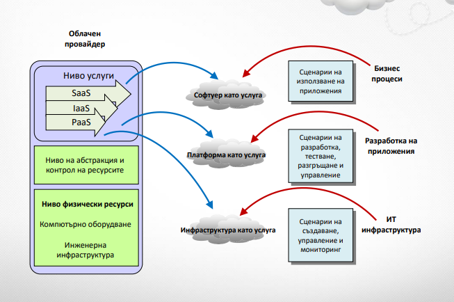

Лекции 9-14
Лекция 9 - СОФТУЕРНИ АРХИТЕКТУРИ.
АРХИТЕКТУРНИ СТИЛОВЕ И ШАБЛОНИ
1. СОФТУЕРНА АРХИТЕКТУРА
Дефиниции:
> Множество от артефакти (принципи, насоки,
политики, модели, стандарти и процеси) и
взаимоотношенията между тях, които насочват
избора, създаването и осъществяването на
софтуерни решения на зададени бизнес цели.
> Включва описание на
- подсистеми и компоненти, представени със съответни
функционални и нефункционални свойства...
- ...и взаимо-отношенията между тях в софтуерна
система.
> Софтуерната архитектура не предлага конкретна
реализация на софтуерна система, а задава
рамка/дизайн (за нейната реализация).
КОМПОНЕНТ НА СОФТУЕРНА СИСТЕМА:
-> Компонентът е капсулирана част на софтуерна
система. Притежава интерфейс, предоставящ начини
за взаимодействие с него.
> Компонентите са изграждащи блокове (building
blocks) на системата.
> На ниво език за моделиране компонентите може да
се представят като процес, услуга и др.
> На ниво език за програмиране компонентите се
реализират като модули, класове, обекти,
множество от близки (в определена област)
функции.
ПОДСИСТЕМА
> Подсистемата е съвкупност от компоненти,
които съвместно реализират дадена задача.
> Подсистемата е отделен елемент в
софтуерната архитектура.
> Тя реализира предназначената ѝ задача като
взаимодейства с други подсистеми и
компоненти.
RATIONAL UNIFIED PROCESS
Една архитектура е съвкупност от основополагащи
решения относно:
> организацията на софтуерна система
> изборът на съставните й структурни елементи и
техните интерфейси, включително:
- тяхното поведение (behavior) и взаимодействията
помежду им (сътрудничества/collaborations)
- композицията на тези структурни и поведенчески
елементи в прогресивно по-големи подсистеми
> архитектурният стил на организацията на
софтуерната система, елементите ѝ, интерфейсите,
взаимодействията и композицията им.
GARLAN И SHAW
...отвъд алгоритмите и структурите от данни...
Архитектурата на софтуерна система включва:
> проектирането на структурата ѝ, и нейния контрол;
> протоколи за комуникация, синхронизация и достъп
до данните;
> определяне на функционалността на проектираните
елементи;
> физическото разпределение (на системата);
> съставът (композицията) на елементите;
> мащабиране и производителност;
> и избор между проектни алтернативи.
SONI, NORD И HOFMEISTER (SIEMENS CORPORATE
RESEARCH)
Софтуерната архитектура има най-малко четири различни
изгледа. В рамките на всяка категория, структурите описват
системата от различна гледна точка:
> Концептуална архитектура (conceptual architecture):
описва системата от гледна точка на основните ѝ дизайн
(съставни) елементи и връзките между тях.
> Архитектурата на модулна взаимо-свързаност (module
interconnection architecture): включва две ортогонални
структури: функционална декомпозиция и слоеве.
> Архитектурата на изпълнението (execution architecture):
описва динамичната структура на системата.
> Архитектурата на кодa (code architecture): описва как
изходния код, изпълнимия код и библиотеки са
организирани в развойната среда.
SHAW
Изгледите на софтуерната архитектура:
> Структурни модели (Structural models)
> Модели на работни рамки (Framework models)
> Динамични модели (Dynamic models)
> Модели на процесите (Process models)
SHAW: СТРУКТУРНИ МОДЕЛИ (STRUCTURAL MODELS)
Структурните модели се състоят от компоненти,
връзки между тях и други аспекти като:
> конфигурация, стил (configuration, style)
> ограничения, семантика (constraints, semantics)
> анализи, свойства (analyses, properties)
> обосновка, изисквания, потребностите на
заинтересованите страни (rationale, requirements,
stakeholders' needs).
SHAW: РАМКОВИ МОДЕЛИ (FRAMEWORK MODELS)
> Рамковите модели са подобни на структурните, но
основната им насока е върху задаване на
последователна структура за изграждане на цялата
система, за разлика от определяне на съставните му
елементите (при структурните).
> Рамкови модели често са насочени към определени
области (домейни) или класове от проблеми.
SHAW: ДИНАМИЧНИ МОДЕЛИ (DYNAMIC MODELS)
Динамичните модели определят качествените
промени в поведението на системите. „Динамично“
може да се отнася до
> промени в конфигурация на системата;
> активиране или деактивиране на предварително
определени комуникационни канали;
> или динамика в изчисленията, като например
промяна на стойности на данни.
SHAW: МОДЕЛИ НА ПРОЦЕСИТЕ (PROCESS
MODELS)
> Моделите на процеси се фокусират върху
- конструирането на архитектурата...
- и стъпките или процеса, използвани в
конструирането ѝ.
> От тази гледна точка, архитектурата е
резултат от следване на скрипт, управляващ
процеса.
ШАБЛОНИ ЗА ДИЗАЙН - КАТЕГОРИЗАЦИЯ
- Създаващи шаблони (Creational patterns) са тези, които
създават обекти. Това дава на програмата по-голяма
гъвкавост при вземането на решения какви обекти трябва
да бъдат създадени за всеки отделен случай.
- Структурните шаблони (Structural patterns) помагат да се
композират групи от обекти в по-големи и сложни
структури, като например сложни потребителски
интерфейси.
- Поведенческите шаблони (Behavioral patterns) помагат да
се определи комуникацията между обектите и контрола на
потока в една комплексна система.
2. 1. АРХИТЕКТУРНИ СТИЛОВЕ – ARCHITECTURAL
STYLES
Дефиниции:
> Архитектурният стил включва:
- описание на типа на компонентите и тяхната
топология;
- описание на модела на данни и контрола на
взаимодействието между компонентите;
- неформално описание на предимствата и
недостатъците от използването на този стил.
> Архитектурните стилове са важни инженерни
артефакти, защото дефинират класове от стандартни
шаблони за разработка, заедно със свързаните с тях
свойства.
> Те предлагат опит и доказателства за това, как се
използва всеки клас.
АРХИТЕКТУРНИ СТИЛОВЕ (2):
> Архитектурният стил:
- осигурява абстрактна рамка за семейство
(family) от системи;
- подобрява логическото и физическото
разпределение (partitioning) на системите;
- насърчава повторна употреба на дизайна,
като предоставя решения на често
повтарящи се проблеми.
2.2. АРХИТЕКТУРНИ ШАБЛОНИ – ARCHITECTURAL
PATTERN:
> Един архитектурен шаблон описва общата
организационна схема на структурата на
софтуерни системи:
- предварително дефинирани подсистеми и
техните отговорности;
- правила и насоки за организиране на
подсистемите;
- отношенията между подсистеми.
АРХИТЕКТУРНИ СТИЛОВЕ И АРХИТЕКТУРНИ ШАБЛОНИ
> Архитектурните стилове, понякога се наричат
архитектурни шаблони.
> Според други определения, архитектурният
стил е композиция от шаблони, комбинирани
с архитектурни принципи.
> Една софтуерна система може да включва
няколко различни архитектурни стила и
шаблона.
2.3. FRAMEWORK (РАМКА)
> Рамката е съвкупност от предположения, концепции и
практики, които определят начин за представяне на
дадена среда.
> Софтуерната рамка е частично реализирана
софтуерна (под) система, която е предназначена да
бъде инстанциирана (конфигурирана и стартирана).
- Тя определя архитектурата на съвкупност от (под)системи
и предоставя основните градивни елементи за
създаването им;
- Тя определя също и местата, които трябва да бъдат
адаптирани (дописани) със специфична функционалност
2.4. ОСНОВНИ АРХИТЕКТУРНИ ШАБЛОНИ
> Три-слойна архитектура – Three-tier architecture
> Многослойна архитектура – Multilayered architecture
> Model-view-controller
> Микроядро – Microkernel
> Черна дъска – Blackboard pattern
> Sensor-controller-actuator
> Presentation–abstraction–control
КАТЕГОРИИ АРХИТЕКТУРНИ СТИЛОВЕ
> Структурни – Structure;
> Споделена (обща) памет – Shared memory;
> Съобщения – Messaging;
> Адаптивни системи – Adaptive systems;
> Разпределени системи – Distributed systems.
Някои от конкретните архитектурни стилове могат да
се намират едновременно в няколко категории. Също
така част от архитектурните шаблони могат да бъдат
причислени към категории архитектурни стилове.
СТРУКТУРНИ АРХИТЕКТУРНИ СТИЛОВЕ
Определят вида и начина на организация на
структурните елементи:
> Компонентно-базирана архитектура – Componentbased;
> Обектно-ориентирана архитектура – Object-Oriented;
> Монолитни приложения;
> Многослойни приложения;
> Комуникационни канали (канали за съобщения) и
филтри – Pipes and filters.
SHARED MEMORY АРХИТЕКТУРНИ СТИЛОВЕ
> Центрирани върху данните – Data-centric;
> Черна дъска – Blackboard;
> Базирани на правила – Rule-based.
АРХИТЕКТУРНИ СТИЛОВЕ ЗА СЪОБЩЕНИЯ
> Базирани на събития – Event-driven;
> Публикуване-абонамент – Publish-subscribe;
> Асинхронни съобщения – Asynchronous
messaging;
> Шина за съобщения – Message Bus.
АРХИТЕКТУРНИ СТИЛОВЕ ЗА АДАПТИВНИ СИСТЕМИ
> Plug-ins;
> Микроядро – Microkernel;
> Отражение – Reflection;
> Дизайн и езици, определени от предметната
област – Domain specific languages and
designs;
АРХИТЕКТУРНИ СТИЛОВЕ ЗА РАЗПРЕДЕЛЕНИ СИСТЕМИ
> Клиент-сървър – Client-server (включително 2-слойни,
3-слойни, n-слойни);
> Споделяне на нищо (несподеляне) – Shared nothing
architecture;
> Space-based architecture – GRID изчисления;
> Object request broker – ORB – среда за отдалечено
извикване на процедури;
> Peer-to-peer (P2P) – равен с равен;
> Representational state transfer (REST);
> Архитектура ориентирана към услуги – Serviceoriented architecture (SOA);
> Облачни технологии – Cloud computing.
2.5. РАЗГЛЕЖДАНЕ НА НЯКОИ АРХИТЕКТУРНИ
СТИЛОВЕ И ШАБЛОНИ
1. Монолитни (еднослойни) приложения;
2. Клиент-сървър (двуслойни) архитектури;
3. Трислойни архитектури;
4. Многослойни архитектури;
5. Model-view-controller шаблон за дизайн;
6. Presentation–abstraction–control шаблон за
дизайн.
2.5.1. МОНОЛИТНИ (ЕДНОСЛОЙНИ) АРХИТЕКТУРИ
> При монолитните приложения потребителския
интерфейс и кодът за достъп до данните е
комбиниран в една програма, която се изпълнява
на една платформа.
> Характеристики:
- автономни – самостоятелни и независими от други
приложения;
- няма модулност, позволяваща замяната на определена
част с друга (без нужда от препрограмиране и
прекомпилиране);
- използват се за по-елементарни десктоп приложения и
приложения, изискващи по-голяма сигурност (и които не
се нуждаят от мрежа за да достъпват някакви данни).
2.5.2. КЛИЕНТ-СЪРВЪР АРХИТЕКТУРИ
> Две отделни програми – клиент и сървър, създават общо
приложение.
> Сървърът предоставя множество от услуги или/и
функционалности за една или повече клиентски програми.
> Различни видове сървъри предоставят различни услуги:
- Уеб сървър
- Файлов сървър
- Сървър за бази от данни
- Пощенски сървър и др.
> Комуникацията между клиента и сървъра се осъществява
върху
- транспортни протоколи – TCP/IP или др.
- приложни протоколи (в application нивото на транспортните
протоколи) – HTTP, FTP, SMTP, TLS/SSL, SOAP, REST и мн.др.
- стандартизирани (или нестандартни) езици – SQL, JSON-, XMLбазирани и др.
- специализирани програмни абстракции и протоколи – soket-и, RPC
(remote procedure call), RMI (remote method invocation), CORBA и др.
ВИДОВЕ КЛИЕНТ-СЪРВЪР АРХИТЕКТУРИ
> Тънък клиент (Thin client)
- основната работна логика се изпълнява на сървъра;
- клиента само представя резултатите;
- примери: уеб страници; уеб
> Дебел клиент (Fat client)
- сървъра се грижи основно за съхранение на данните
- работната логика се изпълнява в клиентското приложение
- обикновено има графичен интерфейс, който допълнително
„утежнява“ приложението
- примери:
> десктоп и мобилни приложения
> други уеб приложения като Java аплети и java web start (бързо забравени
технологии) , флаш приложения (нежелана технологии);
> При някои уеб приложения може да има клиентска логика
реализирана чрез JavaScript – тогава клиентските страници не
са дебели (не съдържат GUI-логика – тя се поддържа от
браузъра), но не са и тънки (имат бизнес логика).
ТРИСЛОЙНИ АРХИТЕКТУРИ (1)
> При трислойните архитектури, логиката на приложението
се разделя на три нива:
- Представително ниво (presentation tier) –
потребителски интерфейс – уеб страници или форми с
GUI;
- Приложно/логическо ниво (application/logic tier) –
изпълнява основната логика на приложението; клиента
предава заявките към междинното ниво, което се явява
от своя страна клиент за нивото на данните, върху
които извършва изискваната логика;
- Ниво за достъп до данните (data tier) – предоставя
функционалност за работа с данните;
ТРИСЛОЙНИ АРХИТЕКТУРИ (2)
> Всяко от нивата отговаря само за определен вид
функционалност и може да бъде разработвано от специалисти
в съответната област (а не от един човек, разбиращ от всичко).
> Всяко от нивата комуникира единствено със съседните нива с
цел сигурност. Данните са изолирани от потребителския
интерфейс.
> Нивата може физически да са реализирани в една програма
или в няколко отделни програми, в зависимост от конкретните
приложения.
> При уеб приложенията има и други терминологии за нивата
- front-end – статично съдържание, предоставяно от уеб; използват се
технологии като HTML, CSS, JavaScript (и по-рядко XML, XSLT и др.);
- middle-tier – динамична обработка и на съдържанието (PHP, Java,
.Neт, Ruby, Python, Perl и др.) и генериране на статичното
съдържание;
- back-end – създаване на БД и функционалност за работа с нея.
ТРИСЛОЙНА АРХИТЕКТУРА ПРИ МОНОЛИТНИ И
КЛИЕНТ-СЪРВЪР ПРИЛОЖЕНИЯ
> Отделни елементи от цялостното приложение също
може да използват трислойна организация на
функционалността
ТРИСЛОЙНА АРХИТЕКТУРА ПРИ ТРИСЛОЙНИ И
МНОГОСЛОЙНИ ПРИЛОЖЕНИЯ
> При трислойните и многослойните приложения трите
функционални нива може да са физически разположени в
различни части от архитектурата.
2.5.4. МНОГОСЛОЙНИ АРХИТЕКТУРИ (1)
Последно разгледаните 3 архитектури са многослойни.
> Многослойните архитектури също имат три основни
слоя, свързани с представянето, основната логика и
данните
> Някои от основните нива са хоризонтално разделени
на под-нива
- Представително
> логика в представителното ниво;
> потребителски интерфейс;
- Ниво за данни
> ниво, отговарящо за съхранение на данните;
> ниво за достъп до данните – абстрактна логика за достъп
до данните, предоставяща възможност за работа с
различни СУБД по еднотипен начин
МНОГОСЛОЙНИ АРХИТЕКТУРИ (2)
> В основните нива може да има и независими един от друг
или комуникиращи си (при необходимост) компоненти,
които са с относително самостоятелна логика и
функционалност:
> В нивото за данни може да има
- компонент за работа с БД;
- компонент за работа с услуги и др.
> В бизнес логиката може да има
- бизнес-компоненти, предоставящи базовата
функционалност;
- модул за управление на компонентите и др.
> Съществуват и вертикални нива, предоставящи
стандартна поддръжка на компонентите от
хоризонталните нива:
- сигурност;
- комуникационни механизми;
- помощна функционалност.
ЦЕЛИ НА МНОГОСЛОЙНИТЕ АРХИТЕКТУРИ
> Многократно използване на кода (компонентите);
> Стабилност на кода – всеки компонент може да бъде
подобрен при необходимост;
> Разделяне на отговорностите;
> Възможност за използване на множество машини;
> Използване на различни технологии;
> Възможност за скалиране на приложенията;
> Възможност за развитие – замяна на компоненти с
по-подходящи.
2.5.5. MODEL-VIEW-CONTROLLER ШАБЛОН ЗА
ДИЗАЙН
> Model–view–controller
(MVC) е софтуерен
шаблон за дизайн;
> Използва се в десктоп,
уеб и мобилните
приложения;
> Разделя представянето
на данните за
потребителя от
обработката им.
КОМПОНЕНТИ НА MVC
> Моделът определя поведението на приложението,
задава бизнес логиката му и директно управлява
данните.
> Изгледът представя информация за потребителя.
Възможни са различни изгледи за едни и същи данни
– текстове, графики и др.
> Контролерът обработва входните данни и ги
превръща в команди за модела или изгледа.
РАЗНОВИДНОСТИ НА MVC АРХИТЕКТУРАТА (1)
> Model-View-Presenter
> Model-View-ViewModel
РАЗНОВИДНОСТИ НА MVC АРХИТЕКТУРАТА (2)
> В това представяне на MVC е указано, че вида на
връзката между контролера и изгледа е 1:n – един
контролер може да има много изгледи. Моделът
обаче е само един.
> Възможно е изгледа при MVC да съдържа инстанция
на модела или да не съдържа – втория случай е
реализиран в следващия пример.
> Разликите в разновидностите на MVC архитектурата
са в начина на организация на представянето на
данните и бизнес логиката.
ПРИМЕР НА JAVA: МОДЕЛ
public class Model {
private int data;
public Model(){
data = 0;}
public Model(int data){
this.data = data;}
public void setData(int data){
this.data = data; }
public int getData(){
return data; }
}
ПРИМЕР: VIEW
public class View {
public View(){
}
public void show(int i){
System.out.println("Данни: " + i);
}
}
ПРИМЕР: CONTROLLER
import java.util.Random;
public class Controller {
private Model model;
private View view;
public Controller(Model model, View view){
this.model = model;
this.view = view;
}
// Промяна на модела - задаване на случайно число
// В реалните случаи данните се прочитат от форми, обработват се за грешки …
public void changeModel(){
Random r = new Random();
model.setData(r.nextInt());
}
// Показване на данните във view-то
public void showView(){
view.show(model.getData());
}
}
ПРИМЕР: MVC ПРИЛОЖЕНИЕ
public class MVCApplication {
public static void main(String []args){
Model model = new Model(5);
View view = new View();
Controller controller = new Controller(model, view);
// Входа минава единствено през контролера
controller.showView();
controller.changeModel();
controller.showView();
}
}
Примерен резултат:
Данни: 5
Данни: -10822813
2.5.6. PRESENTATION–ABSTRACTION–CONTROL ШАБЛОН
ЗА ДИЗАЙН (HIERARCHICAL MODEL–VIEW–CONTROLLER)
> PAC се използва в йерархични структури от агенти.
> Всеки агент е реализиран чрез MVC архитектурата
Лекция 10 - МРЕЖОВИ АРХИТЕКТУРИ. СРЕДСТВА ЗА
ОПИСАНИЕ НА СОФТУЕРНИ АРХИТЕКТУРИ
1. МРЕЖОВИ АРХИТЕКТУРИ (1)
> Мрежовите архитектури определят различни начини на
комуникация между отделни софтуерни възли.
> Многослойните клиент-сървър архитектури трябва да
определят каква мрежова топология ще използват.
> Софтуерните системи, работещи в мрежа са няколко вида
(виж фиг. на следващия слайд)
- централизирани – centralized – има един централен възел
(машина или услуга) за съхранение на данни и изчисления;
децентрализирани – decentralized – централен възел
осъществява контрол върху свързани възли на следващо ниво;
- разпределени – distributed – всички възли са равноправни –
данните се дублират в няколко възела с цел защита
МРЕЖОВИ АРХИТЕКТУРИ (2)
ПРИМЕРИ ЗА МРЕЖОВИ АРХИТЕКТУРИ:
> Централизирани – Сайтовете на потребителско ниво са
централизирани, защото всички потребители достъпват
един и същи адрес. Вътрешната организация на сайта
може да бъде разпределена – данните да се съхраняват и
обработват на множество физически машини.
> Децентрализирани – системата за домейн имена DNS е
организирана йерархично;
> Разпределени – P2P приложения за споделяне на
файлове.
Децентрализираните и разпределените системи са
самоорганизиращи се.
СРАВНЕНИЯ НА МРЕЖОВИТЕ АРХИТЕКТУРИ (1):
> Точки на отказ/Поддръжка (Points of Failure /
Maintenance):
- Централизираните системи са лесни за поддръжка,
защото имат само една точка за обработка на грешки.
- Децентрализираните имат повече точки за на отказ, но са
краен брой.
- Разпределените са по-сложни за поддръжка.
> Устойчивост на отказ/Стабилност (Fault Tolerance /
Stability):
- Централизираните са най-нестабилни – системата спира
при спиране на централния възел.
- Ако спре централен възел при децентрализирана система
– наследниците става централни възли.
- Разпределените са най-стабилни – отказ на един възел не
разрушава системата.
СРАВНЕНИЯ НА МРЕЖОВИТЕ АРХИТЕКТУРИ (2):
> Скалируемост (Scalability / Max Population):
- Централизирани— ниска скалируемост
- Децентрализирани—средна
- Разпределени—безкрайна.
> Леснота на разработка (Ease of development / Creation):
- Централизираните се създават бързо – обикновено се създават
с един framework.
- За децентрализираните и разпределените първо трябва да се
определят множество детайли на ниско ниво, като споделяне
на ресурси и комуникация (communication/transport).
> Бъдещо развитие (Evolution / Diversity):
- Тъй като централизираните използват един framework не могат
да се развиват лесно.
- За децентрализираните и разпределените, след като се създаде
основната инфраструктура, развитието е лесно.
РАЗПРЕДЕЛЕНИ И ПАРАЛЕЛНИ ИЗЧИСЛЕНИЯ:
> Каква е разликата?
> Разпределените изчисления се извършват на много
различни машини. Принципът на работа е „разделяй и
владей“
- разделя се задачата на множество подзадачи,
- всяка се обработва на различна машина,
- резултатите от отделните обработки се връщат в централния
възел,
- където се сливат и създава крайния резултат.
> Паралелните изчисления са свързани с пълноценното
използване на изчислителните ресурси на една машина
чрез едновременното изпълнение на множество нишки
(threads) върху един или повече процесора (на
машината).
2. СРЕДСТВА ЗА ОПИСАНИЕ НА СОФТУЕРНИ
АРХИТЕКТУРИ
Софтуерните архитектури се описват по три основни
начина:
> UML (Unified Modeling Language) – …;
> View Model (Viewpoints framework) – framework за
представяне на различни изгледи и перспективи на
софтуерно приложение;
> ADL (Architecture Description Languages) – формални
езици за описание на софтуерни архитектури;
2.1. UML:
За описанието на архитектурите с UML се използват
различни видове диаграми:
> Структурни (Structural) диаграми;
> Поведенчески (Behavioral).
UML: СТРУКТУРНИ ДИАГРАМИ
> Class – описание на класовете и интерфейсите, и
взаимоотношенията им в системата;
> Object – описание на статично състояние на обектите по
време на работа в системата;
> Package – описва организацията на класовете и
интерфейсите в пакети;
> Component – описание на компоненти, вътрешни връзки,
интерфейси и връзки със системата;
> Composite structure – описание на вътрешната структура
(класове, интерфейси и др.) на компонентите;
> Deployment – описва физически възли на системата в които
компонентите са деплойнати (разгърнати/инсталирани).
UML: ПОВЕДЕНЧЕСКИ ДИАГРАМИ
> Use case – описват се функционалностите и употребата им от
актьорите.
> Activity – описват се потокът от дейности, и връзките между тях в
системата дейности и връзки.
> State Machine/state chart – описват се промените в състоянието на
системата в зависимост от възникнали външни или вътрешни за
системата събития.
> Sequence – представят се последователностите на извикванията на
функционалности за представяне на конкретна дейност.
> Interaction Overview – комбинира activity и sequence диаграми за
представяне на контрола на потока от дейности и бизнес процеси.
> Communication – подобни са на sequence диаграмите, но фокуса е
върху ролите на обектите, а не върху дейностите.
> Time Sequenced – описва се даден обект в конкретна времева рамка.
2.2. VIEW MODEL (VIEWPOINTS FRAMEWORK)
> Viewpoints framework определя съвкупност от
съгласувани изгледи (view-та), които се използват в
изграждането на архитектурата на системата;
> Разделянето на архитектурата в отделни изгледи и
гледните точки улеснява разбирането на сложни
системи.
> Гледните точки са свързани с разделяне на
задълженията и отговорностите (в организацията). Те
определят различни аспекти от на архитектурата,
които могат да бъдат специфицирани
самостоятелно от експерти в съответната област.
ОСНОВНИ ПОНЯТИЯ: MODEL, VIEW, VIEWPOINTS
> Модел: Моделът представлява пълно, основно и опростено
описание на софтуерна архитектура. Състои се от множество
изгледи на системата (гледни точки) от различни перспективи.
> Изглед: Един изглед представя системата от перспективата на
множество свързани проблеми. Той описва системата от гледна
точка (перспектива) на различните заинтересовани страни – крайни
потребители, разработчици, мениджъри, тестери...Изгледите могат
да бъдат функционални, информационни, организационни,
инфраструктурни…
> Гледна точка: Гледните точки разделят отговорностите в системата,
така че проблемите в тези области могат да бъдат разгледани
самостоятелно. Гледните точки могат да бъдат определени според
ролите – планировчик, собственик, дизайнер, разработчик…
> Определянето на конкретните изгледи, перспективи и гледни точки
се извършва по време на създаване на архитектурния модел.
> Съществуват стандартни архитектурни „View Model“-рамки.
ОСНОВНИ VIEW MODEL
> Three schema approach;
> "4+1" view model (Kruchten - Rational Software);
> TEAF view model, базиран на Zachman Framework;
> Enterprise Architecture View
- Zachman Framework;
- RM-ODP views;
- DoDAF views;
- Federal Enterprise Architecture views
"4+1" VIEW MODEL: ОПИСАНИЕ
> Изгледите описват системата от гледните
точки на различни заинтересовани страни:
- крайни потребители;
- разработчици;
- мениджъри на проекти.
> Четирите изгледа са:
- логически изглед;
- развоен изглед;
- изглед на процесите;
- физически изглед.
"4+1" VIEW MODEL: ИЗГЛЕДИ
> Логически изглед – представя функционалността,
която системата осигурява на крайните потребители.
> Развоен изглед – представя система от
перспективата на програмистите и се занимава с
управлението на софтуера.
> Изглед на процесите – описва процесите в системата
и комуникацията между тях, както и поведението на
системата по време на работа (run-time).
> Физически изглед – изобразява системата от гледна
точка на системния инженер. Определя топологията
на софтуерните компоненти на физическо ниво, а
също и механизмите за комуникацията между
компонентите.
"4+1" VIEW MODEL: ИЗГЛЕДИ
> Zachman Framework;
> TOGAF;
> DoDAF;
> RM-ODP
2.3. ЕЗИЦИ ЗА ОПИСАНИЕ НА СОФТУЕРНИ АРХИТЕКТУРИ
> ADL-езиците са специализирани за създаване, усъвършенстване,
анализ и валидация на софтуерни архитектури.
> Те са формални езици – с краен брой думи (примитиви) за
представяне на различни елементи
- софтуерни – процеси, нишки, данни, компоненти…
- хардуерни – процесори, устройства, памет…
> Използват UML нотация за описание на елементите чрез графични
обекти и връзки между тях (box-and-line);
> Много от ADL-езиците са насочени за описание на архитектури в
конкретен домейн.
> Пълните ADL-езици поддържат
- основните архитектурни стилове и шаблони;
- генериране на спецификация на системата;
- автоматично създаване софтуерен прототип на системата
КОНКРЕТНИ ADL-ЕЗИЦИ
> Archi / ArchiMate
> Architecture Analysis & Design Language (AADL) -
стандартизиран от SAE
> C4 model
> EAST-ADL
BUILDER (СТРОИТЕЛ)
Цел:
- Разделя процеса на създаването на сложен продукт
от неговото представяне.
- Един и същи процес за създаване на продукт може
да създаде продукт с различни представяния.
УПОТРЕБА:
Подходящо е да се използва в следните случаи:
- алгоритъмът за създаване на сложен обект трябва да
бъде независим от частите, от които е съставен
обекта и начина, по който е асемблиран.
- процесът на конструиране трябва да позволи
различни представяния на обекта.
СТРУКТУРА НА ШАБЛОНА:
- Builder - абстрактен интерфейс за създаване на части от
продукт
- ConcreteBuilder
> конструира и асмеблира части на продукта чрез имплементиране
на интерфейса Builder
> дефинира и следи за създаваните от него представяния
> предоставя интерфейс за извличане на продукта.
- Director - конструира обект, като използва интерфейса Builder
- Product
> представлява сложния обект, който се изгражда. ConcreteBuilder
създава вътрешното представяне на продукта и дефинира
процеса на неговото асемблиране
> включва класове, дефиниращи съставните части, включително
интерфейсите за асемблиране на частите до крайния резултат.
ВЗАИМОДЕЙСТВИЯ:
- Клиентът създава обект Director и го конфигурира с
желания Builder обект.
- Director уведомява builder, когато трябва да се
изгради някоя част от продукта.
- Builder обработва заявките от director-а и добавя
частите към продукта.
- Клиентът извлича продукта от builder-а.
ПРЕДИМСТВА И НЕДОСТАТЪЦИ:
- Позволява да се променя вътрешното представяне
на продукт. Обектът Builder доставя на director-а
абстрактен интерфейс за изграждане на продукт.
Интерфейсът позволява на builder-а да скрие
представянето и вътрешната структурата на продукта.
Той скрива и как е асемблиран продукта. Тъй като
продуктът се конструира чрез абстрактен интерфейс,
всичко, което трябва да се направи, за да се промени
вътрешното представяне на продукта, е да се
дефинира нов вид builder.
- Изолира кода за конструиране и представяне.
Шаблонът Builder подобрява модулността чрез
капсулиране на начина, по който се конструира и
представя сложен обект. Клиентите не трябва да знаят
нищо за класовете, които дефинират вътрешната
структура на продукта (такива класове не са включени
в интерфейса на Builder-а).
Всеки ConcreteBuilder съдържа всичкия код за
създаване и асемблиране на конкретен вид продукт.
Кодът е написан веднъж; след това различни Director
обекти могат да го използват многократно, за да
изградят различни варианти на продукта от един и
същи набор от части.
- Има силен контрол върху процеса на изграждане
на обект. За разлика от градивните паблони, които
изграждат продукти “наведнъж”, шаблонът Builder
конструира продукт стъпка по стъпка под контрола
на director-а. Чак след като продуктът е завършен,
director го взема от builder-а. По този начин
интерфейса Builder рефлектира върху процеса на
конструиране на продукта повече отколкото другите
градивни шаблони. Това дава по-прецизен контрол
върху процеса на изграждане и следователно на
вътрешната структура на изграждания продукт.
ВРЪЗКА С ДРУГИ ШАБЛОНИ:
- Abstract Factory прилича на Builder по това, че
също може да изгради сложни обекти. Основната
разлика е, че шаблона Builder е фокусиран върху
изграждане на сложен обект стъпка по стъпка.
Акцента на Abstract Factory е върху групи от
продукти (прости или сложни). Builder връща
продуктa като крайна стъпка, за разлика от
шаблона Abstract Factory, където продукта се
връща веднага.
- Често обекта, изграден от Builder е Composite.
Лекция 11 - ОБЛАЧЕН КОМПЮТИНГ
КАКВО Е CLOUD COMPUTING?
Дефиниция:
> Синоними: облачни изчисления, облачен компютинг,
изчислителен облак, ИТ облак и др.
> Ние ще използваме термина облачни изчисления.
> Облачните изчисления използват технологии, услуги
и приложения, подобни на тези в интернет, и ги
превръщат в услуга на принципа на
самообслужването.
> Употребата на думата cloud (облак) прави препратка
към две основни понятия: абстракция и
виртуализация.
АБСТРАКЦИЯ (ABSTRACTION)
> Облачните изчисления отделят подробностите около
имплементацията на системата от потребителите и
програмистите.
> Приложенията работят на неспецифицирани
физически системи, данните се съхраняват на
неизвестни места, администрирането на системите е
възложено на други лица, а достъпът на
потребителите е повсеместен.
ВИРТУАЛИЗАЦИЯ (VIRTUALIZATION)
> Облачните изчисления виртуализират системите чрез
обединяване и споделяне на ресурси.
> Системите и съхраняването могат да бъдат осигурени
от централизирана инфраструктура в зависимост от
нуждите, разходите се оценяват на базата на
изчислено потребление, активирана е опция за
мулти-наемане (multi-tenancy).
МУЛТИ-НАЕМАНЕ (MULTI-TENANCY)
> Мулти-наемане – принцип в софтуерната
архитектура, където едно копие на софтуера работи
на сървър, обслужващ множество групи „наематели”.
> „Наемател” е група потребители, които споделят
един и същ изглед на използвания софтуер.
> Приложението е предназначено да предостави на
всеки „наемател” специален дял от софтуера,
включващ данни, конфигурация, управление на
потребителите, индивидуална функционалност за
съответния наемател и нефункционални свойства.
> Облачните изчисления са абстракция, основаваща се
на идеята за обединяване на физически ресурси и
представянето им като виртуален ресурс.
> Облакът представлява нов модел за осигуряване на
ресурси, за представяне на приложения и за
потребителски достъп до услуги, независим от
конкретна платформа.
> Облаците биват различни типове, а услугите и
приложенията, работещи чрез тях, могат да бъдат
или да не бъдат доставени от доставчик на облачни
услуги.
ПРИМЕР ЗА СОФТУЕР КАТО УСЛУГА: GOOGLE
> През последното десетилетие Google е изградил
световна мрежа от центрове за данни, обслужващи
търсачката.
> По този начин Google е превзел значителна част от
световните приходи за реклама.
> Тези приходи дават на Google възможност да
предлага на потребителите безплатен софтуер на
базата на тази инфраструктура, напр. Gmail, Drive,
Docs, Sheets, Slides, Sites, Classroom и др.
ПРИМЕР ЗА ПЛАТФОРМА КАТО УСЛУГА: AZURE
> Microsoft създава Платформата Azure.
> Тя дава възможност на .NET Framework
приложенията да работят през интернет като
алтернативна платформа за софтуер, разработен от
Майкрософт и работещ на настолни компютри.
ПРИМЕР ЗА ИНФРАСТРУКТУРА КАТО УСЛУГА:
AMAZON WEB SERVICES
> Amazon Web Services е един от най-успешните
бизнеси, базирани на облачни изчисления.
> Представлява предлагане на Инфраструктура като
Услуга, което позволява да наемане на виртуални
компютри от инфраструктурата на Amazon.
ТИПОВЕ ИТ ОБЛАК
Две основни класификации:
> Модели на разполагане (Deployment models) -
определят се от местоположението и управлението
на инфраструктурата на облака.
> Модели според услугата (Service models) - състоят се
от конкретните видове услуги, до които
потребителите имат достъп чрез съответната
платформа за облачни изчисления.
МОДЕЛ НА NIST
> Правителството на САЩ е сред големите потребители на
компютърни услуги и един от големите потребители на
облачни мрежи.
> В Американският Национален Институт за Стандарти и
Технологии (NIST) е разработена референтна архитектура
за облачни изчисления (NIST Cloud Computing Reference
Architecture).
> Архитектурата разделя облачните изчисления на модели,
в зависимост от предлаганите услуги и използваните
модели на разполагане.
> Според дефиницията на NIST, „облачните мрежи”
задължително използват виртуализация и поддържат
мулти-наемане.
МОДЕЛИ НА РАЗПОЛАГАНЕ
Моделът на разполагане определя целта на облака и естеството на
местоположението му.
> Публичен облак: Инфраструктурата на публичния облак е предоставена
за обществено ползване и е собственост на организация, която продава
облачни услуги.
> Частен облак: Инфраструктурата на частния облак функционира за
изключителното ползване от определена организация. Облакът може да
се управлява от същата тази организация или от трета страна. Частните
облаци могат да бъдат в или извън учреждението.
> Хибриден облак: Хибридният облак комбинира множество облаци
(частни, обществени или публични), като отделните облаци запазват
уникалните си идентичности, но са свързани в едно цяло. Хибридният
облак може да предложи стандартизиран или съгласуван (с авторски или
други права на собственост) достъп до данни и приложения, както и
преносимост на приложенията.
> Обществен облак: Обществения облак е облак, организиран да служи на
обща функция или цел. Той може да е създаден за една или за няколко
организации, но само ако споделят общи интереси като мисия, политика,
сигурност, необходимост от спазване на регулаторни изисквания и т.н.
Общественият облак може да се управлява от съответната
организация/организации или от трета страна.
МОДЕЛИ СПОРЕД УСЛУГИТЕ
> Съществуват много различни модели според
услугите, описани в литературата, като всички те са в
следната форма: XaaS, или “ as a Service”
(<Нещо> като услуга).
> Общоприетите видове услуги са 3 типа:
- Инфраструктура като услуга (Infrastructure as a
service, IaaS);
- Платформа като услуга (Platform as a service, PaaS);
- Софтуер като услуга (Software as a service, SaaS).
ИНФРАСТРУКТУРА КАТО УСЛУГА (IAAS)
> IaaS предоставя виртуални машини, виртуална памет,
виртуална инфраструктура, както и други хардуерни
„активи” като ресурси, които клиентите могат да
използват.
> Доставчикът на IaaS услуги управлява цялата
инфраструктура, а клиентът отговаря за всички други
аспекти на разполагането.
> Това може да включва операционната система,
приложенията и взаимодействията на потребителя
със системата.
ПЛАТФОРМА КАТО УСЛУГА (PAAS)
> PaaS предоставя виртуални машини, операционни
системи, приложения, услуги, рамки за разработване на
софтуерни приложения (development frameworks),
операции с бази данни и структури за контрол.
> Клиентът може да разположи приложенията си върху
инфраструктурата на облака или да използва приложения,
програмирани с помощта на езици и инструменти, които
се поддържат от доставчика на PaaS услуги.
> Доставчикът на услугата управлява инфраструктурата на
облака, операционните системи и упълномощаващия
софтуер.
> Клиентът е отговорен за инсталирането и управляването
на приложението, разположено от него.
СОФТУЕР КАТО УСЛУГА (SAAS)
> SaaS е цялостна операционна среда с приложения,
управление и съответния потребителски интерфейс.
> В модела SaaS приложението се предоставя на
клиента чрез интерфейс тип тънък клиент
(обикновено браузър), а отговорността на клиентаползвател на услугата, включва въвеждане и
управление на данните и взаимодействието с
потребителите.
> Осигуряването на всичко необходимо - от
приложението до инфраструктурата е отговорност на
доставчика.
> Трите различни модела според услугите, взети
заедно, са станали известни като SPI-моделът на
облачния компютинг.
> Съществуват още много други модели според
услугите: StaaS (Storage as a Service) – Съхраняващи
устройства като услуга; IdaaS (Identity as a Service) –
Идентичност като услуга; CmaaS (Compliance as a
Service) – Съвместимост като услуга и т. н., но SPI
услугите обхващат всички други възможности.
РЕФЕРЕНТЕН ОБЛАЧЕН МОДЕЛ
> Удачно е да гледаме на тези модели като на купчина
хардуер/софтуер.
> Една такава репрезентация, наречена „референтен облачен
модел”, е показана на следващата фигура.
> В долната част на купчината се намира хардуерът или
инфраструктурата, включващ мрежата.
> С движението нагоре по купчината всеки
модел_според_услугите наследява възможностите на
модела под него. IaaS има най-слабо ниво на интегрирана
функционалност и най-ниско ниво на интеграция, а SaaS е
на най-високото ниво
IaaS УСЛУГИ
> Примерни IaaS услуги са: Amazon Elastic Compute Cloud
(EC2), Google Compute Engine, VMware, Azure Virtual
Machines, Linode, RackSpace, и др.
> Всички тези доставчици предлагат директен достъп до
хардуерни ресурси.
> При Amazon EC2, считан за класическия пример за IaaS, на
клиента се осигурява компютър под формата на виртуална
машина, осигурява се място за съхранение на информация,
след което той може да инсталира операционна система и
приложения върху тази виртуална система.
> Amazon разполага с множество операционни
системи и специализирани приложения за бизнеса,
които предоставя под наем под формата на редица
готови имиджи (images), но клиентите могат да
инсталират всяка програма, с която искат да работят.
> Споразумението за ниво на услугите, публикувано на
уебсайта на Amazon, договорно задължава Amazon
да осигури ниво на изпълнение, съизмеримо с типа
на избраните ресурси, както и определено ниво на
надеждност, измерено спрямо времето на активно
ползване на системата
PaaS УСЛУГИ
> Услугата PaaS добавя към модела IaaS функции за
интеграция, мидълуер и други услуги за оркестрация
и хореография.
> Примери за PaaS услуги са: Google AppEngine,
Microsoft Azure, Heroku, IBM Cloud Foundry, Red Hat
OpenShift, и др.
SaaS УСЛУГИ
> Когато доставчик на облачни услуги предлага
софтуер, работещ в облака, с използване на
приложението по модела плащане според
потреблението (pay-as-you-go), това се нарича SaaS.
> При SaaS, потребителят използва приложението
според нуждите си и не отговаря за инсталирането
на приложението, нито за поддръжката или
обслужването му.
> Примери за SaaS облачни услуги са: Google G Suite,
SalesForce.com, ZOHO Platform, MS Office 365, Adobe
Creative Cloud, Zendesk, и др.
ОСНОВНИ ХАРАКТЕРИСТИКИ НА ОБЛАЧНИТЕ СИСТЕМИ
> Самообслужване при поискване: Клиентът може да заяви и използва
компютърни ресурси, без да е необходимо да взаимодейства с
доставчика на облачната услуга.
> Широк достъп до мрежата: Достъпът до ресурсите в облака е наличен
чрез мрежата посредством стандартни методи по начин, който осигурява
платформено-независим достъп на всички типове клиенти. Това включва
смесица от хетерогенни операционни системи, както и дебели и тънки
платформи като лаптопи, мобилни телефони и PDA.
> Обединяване на ресурси: Доставчикът на облачна услуга създава
ресурси, които се обединяват в система, поддържаща споделено
използване (от много групи потребители едновременно). Физическите и
виртуалните системи се разпределят и преразпределят динамично,
според нуждите. Съществена за концепцията на обединяване е идеята за
абстрактност, която скрива местоположението на ресурси като виртуални
машини, обработка, памет, съхранение, честотен диапазон на мрежата и
свързаност.
> Бърза еластичност: Ресурсите могат да се доставят бързо и
гъвкаво. Системата може да добавя ресурси или чрез увеличаване
мощността на системите (по-мощни компютри), или чрез
разширяване на системите (повече компютри от същия вид), като
това може да стане автоматично или ръчно. От гледна точка на
клиента, ресурсите на облака трябва да изглеждат неограничени и
да могат да се закупят по всяко време и във всякакви количества.
> Измерена услуга: Използването на ресурсите на облачната
система се измерва, проверява и отчита на потребителя на базата
на измервателна система. Потребителят може да се таксува на
базата на известен показател, например използвана памет, брой
компютърни операции, мрежов Вход/Изход или диапазон,
използвана процесорна мощ, и т.н. Клиентът се таксува на база на
нивото на предоставените услуги.
ПРЕДИМСТВА НА ОБЛАЧНИТЕ СИСТЕМИ
> По-ниски цени: Тъй като облачните мрежи работят с по-висока
ефективност и при по-оптимално използване, те постигат
значително намаляване на разходите.
> Лесно използване: В зависимост от предлагания тип услуга може
да се установи, че за използването на определен софтуер не се
изискват софтуерни лицензи.
> Качество на услугата: Качеството на услугата (QoS) може да е
регламентирано чрез договор от доставчика на облачни услуги.
> Надеждност: Скалируемостта на облачните мрежи,
способността им да осигуряват балансиране на натоварването и
защита при срив означават, че те имат висока степен на
надеждност, често много по-висока от надеждността, която може
да се постигне в рамките на отделна организация.
> Изнесено IT управление: Използването на облачни
изчисления позволява някой друг да управлява
корпоративната компютърна инфраструктура. В повечето
случаи може да се постигне значително намаление на
разходите за ИТ персонал.
> Опростена поддръжка и ъпгрейд: Тъй като системата е
централизирана, може лесно да се прилагат пачове и
ъпгрейди. Това означава, че потребителите може винаги да
имат достъп до най-новите версии на софтуера.
> Ниска бариера за достъп: По-точно казано, ниски
първоначални капиталови разходи. Чрез облачния
компютинг всяка фирма може да се разрастне с малки
разходи за ИТ.
Лекция 12 - РЕФЕРЕНТНА ОБЛАЧНА АРХИТЕКТУРА НА NIST
NIST РЕФЕРЕНТНА АРХИТЕКТУРА ЗА
ОБЛАЧНИ ИЗЧИСЛЕНИЯ
> В Американския национален институт за стандарти и
технологии (National Institute of Standards and Technology,
NIST) е разработена референтна архитектура за облачни
изчисления (NIST Cloud Computing Reference Architecture).
> Архитектурата има за цел да очертае насоки и
перспективи за разбиране, избор, проектиране и/или
разгръщане на облачни инфраструктури.
> Тя съдържа модели на услуги и модели на разгръщане на
облачни приложения.
АКТЬОРИ В NIST АРХИТЕКТУРАТА
Референтната архитектура включва 5 типа актьори, всеки от които има
определена роля и изпълнява определени действия и функции:
> Облачен потребител (Cloud Consumer) - лице или организация,
използващи облачни услуги.
> Облачен провайдер (Cloud Provider) - лице, организация или същност,
отговаряща за създаване на облачни услуги за облачните потребители.
> Облачен брокер (Cloud Broker) - същност, управляваща използването,
производителността и предоставянето на облачни услуги, както и
управляваща отношенията между облачните провайдери и облачните
потребители. Брокера е опционален актьор, тъй като облачните
потребители могат да получават услуги и директно от облачния провайдер.
> Облачен одитор (Cloud Auditor) - участник, който може да извършва
независима оценка на облачни услуги, свързани с работата на
информационни системи, производителността и сигурността на облака.
> Облачен оператор на връзка (Cloud Carrier) - посредник, предоставящ
услуги по включване и транспорт на облачни услуги от облачни
провайдери към облачни потребители.
КОМБИНИРАНА КОНЦЕПТУАЛНА ДИАГРАМА НА
РЕФЕРЕНТНА АРХИТЕКТУРА НА ОБЛАЧНИТЕ ИЗЧИСЛЕНИЯ


ПРИМЕРНИ СЦЕНАРИИ В ОБЛАЧНИТЕ ИЗЧИСЛЕНИЯ
УЧАСТИЕ НА ОБЛАЧНИЯ БРОКЕР ВЪВ ВЗАИМОДЕЙСТВИЕТО
ПОТРЕБИТЕЛ С ПРОВАЙДЕР
> Облачният потребител може да заяви услуга на облачния
брокер вместо директно на облачния провайдер. Облачния
брокер може да създава нови услуги, като комбинира или
доразвива съществуващи услуги. В този пример облачния
провайдер е невидим за облачния потребител.
УЧАСТИЕ НА ОБЛАЧНИЯ ОПЕРАТОР В ПРЕДОСТАВЯНЕ
НА УСЛУГИ ОТ ОБЛАЧНИЯ ПРОВАЙДЕР
> Облачният оператор за връзка предоставя услуги за включване и
транспорт на облачни услуги от облачния провайдер за облачния
потребител. Облачния провайдер установява споразумение за
ниво на обслужване SLA с облачния оператор.
УЧАСТИЕ НА ОБЛАЧНИЯ ОДИТОР В ОЦЕНКАТА НА
ПРЕДОСТАВЕНИТЕ ОТ ПРОВАЙДЕРА ОБЛАЧНИ УСЛУГИ
> Облачният одитор провежда независима оценка на
обслужването, на сигурността на реализация на облачна
услуга.
ОБЛАЧЕН ПОТРЕБИТЕЛ
> Лице или организация, поддържащи бизнес-отношения и
използващи услугите на облачни провайдери.
> Типове потребители (на база приложения/сценарии на
използване):
- SaaS - използва приложения / услуги за автоматизация на
бизнес процеси;
- PaaS - разработва, тества, разгръща и управлява приложения,
разгърнати в облачно обкръжение;
- IaaS – създава / установява, управлява и извършва мониторинг
на услугите за управление на инфраструктурата.
ПРИМЕРНИ УСЛУГИ, ДОСТЪПНИ ЗА ОБЛАЧНИТЕ ПОТРЕБИТЕЛИ
ОБЛАЧЕН ПРОВАЙДЕР
> Лице, организация или същност, отговаряща за достъпността
на облачна услуга за облачните потребители.
> Типове облачни провейдери:
- SaaS - установява, управлява, съпровожда и поддържа програмно
осигуряване, разгънато в облачната инфраструктура;
- PaaS - предоставя и управлява облачна инфраструктура и
свързващо програмно осигуряване (middleware) за платформата
за потребителите; предоставя инструменти за разработка,
разгръщане и администриране на потребителските платформи;
- IaaS - предоставя и управлява физически изчислителни мощности,
системи за съхранение, мрежи и хостинг - обкръжение, както и
облачна инфраструктура за IaaS-потребители.
ПРИМЕРНИ ДЕЙНОСТИ НА ОБЛАЧНИТЕ ПРОВАЙДЪРИ
ОБЛАЧЕН ОДИТОР
> Участник, който може да извършва независима оценка на
облачни услуги, по обслужване на информационни системи,
производителността и сигурността на облака;
> може да оценява услугите, предоставяни от облачния
провайдер, по отношение на сигурността (security control),
съблюдаване на поверителност (privacy impact),
производителност и т.н.
> може да провежда оценка на контрола на сигурност на
информационната система в определени граници, в които
системата функционира по предназначение и произвежда
желания резултат, в съответствие с изискванията за
сигурност, предявявани към системата.
ОБЛАЧЕН БРОКЕР
> Същност, управляваща използването, производителността и
предоставянето на облачни услуги, както и установяваща отношения
между облачните провайдери и облачните потребители.
> Основни услуги, предоставяни от облачния брокер:
- Посредничество за услуги (Service Intermediation): облачния брокер
разширява конкретна услуга, подобрявайки нейни отделни възможности и
предоставяйки допълнителни услуги на облачните потребители.
- Агрегиране на услугите (Service Aggregation): облачния брокер комбинира
и интегрира услуги в една или повече услуги. Осигурява интеграция на
данните и техния безопасен пренос между облачните потребители и
облачните провайдери.
- Арбитраж на услугитe (Service Arbitrage): арбитража на услугите е
аналогичен на агрегирането на услугите, но се отличава по това, че
услугите не се модифицират. Арбитража на услугите осигурява гъвкав и
изгоден избор на услуга.
ОБЛАЧЕН ОПЕРАТОР ЗА ВРЪЗКА
> Посредник, предоставящ услуги по включване и транспорт на
облачни услуги от облачни провайдери към облачни потребители.
> Предоставя на облачните потребители достъп до облачни услуги
чрез мрежови (вкл. компютри, мобилни телефони, мобилни
устройства за достъп до Интернет), телекомуникационни и други
средства за достъп.
> Осигуряването на доставка на услуги може да се обезпечи от
мрежовите и телекомуникационни оператори, както и от
транспортни агенти (т.е. бизнес - организации, осигуряващи
физическо транспортиране на средства за съхранение на
информация).
> Облачният провайдер трябва да сключва с облачният оператор за
връзка споразумение за нивото на услугите (SLA). В общия случай,
към облачния оператор за връзка могат да се предявят изисквания
по предоставяне на отделени и защитени връзки.
РАЗГРЪЩАНЕ НА ОБЛАЧНИТЕ УСЛУГИ
Облачната система може да функционира в един от четирите
модела:
1. Частен облак (Private cloud): Облачната инфраструктура
функционира с цел обслужване на една организация.
Инфраструктурата може да се управлява от самата организация
или от трета страна, като може да съществува както на страната
на облачния потребител, така и при външен провайдер.
2. Обществен облак (Community cloud): Облачната инфраструктура
се използва съвместно от няколко организации и се поддържа от
ограничено общество, ръководещо се от общи принципи. Такава
облачна инфраструктура може да се управлява от самите
организации или от трета страна, като може да съществува както
на страната на потребителя така и при външен провайдер.
3. Публичен облак (Public cloud): Облачната инфраструктура е
създадена като общодостъпна или достъпна за голяма група
потребители, които не са свързани с общи интереси, но
напр. принадлежат към една област от дейност. Такава
инфраструктура е собственост на организация, която
предоставя съответни облачни услуги.
4. Хибриден облак (Hybrid cloud): Облачната инфраструктура
се явява композиция от два и повече облака (частни,
общeствени или публични), оставащи уникални същности,
но обединени заедно чрез стандартизирани технологии,
осигуряващи преносимост на данни и приложения между
тези облаци (напр. технологии като пакетно предаване на
данни за постигане на баланс на натоварването между
облаците).
ОРКЕСТРАЦИЯ НА ОБЛАЧНИТЕ УСЛУГИ
(SERVICE ORCHESTRATION)
> Отнася се до композиция на системни елементи, за
поддържане на дейностите на облачния доставчик за
систематизация, координация и управление на облачната
инфраструктура.
> Обобщената облачна среда съдържа три концептуални
нива:
1. Ниво на услуги (Service Layer);
2. Ниво Абстракции и контрол на ресурсите (Resource
Abstraction and Control Level);
3. Ниво Физически ресурси (Physical Resource Level).
НИВО НА УСЛУГИ (SERVICE LAYER)
Определя базови услуги, предоставяни от облачните провайдери:
> SaaS: разгръщане на приложенията. Предполага работа с тях
посредством обръщения към облака от специално предназначени
програмни клиенти и други програми, ориентирани към крайните
потребители.
> PaaS: услуги за потребителите, предназначени за разработка и
разгръщане на приложения на облачната инфраструктура,
включващи контейнери от приложения, инструменти за
разработка на приложения, системи за управление на бази данни
и т.н.
> IaaS: предоставяне на изчислителни мощности, системи за
съхранение, мрежови и други фундаментални изчислителни
ресурси, върху които облачните потребители могат да разгърнат и
изпълняват приложения в облачната инфраструктура.
НИВО АБСТРАКЦИИ И КОНТРОЛ НА РЕСУРСИТЕ
(RESOURCE ABSTRACTION AND CONTROL LEVEL)
> Съдържа системните компоненти, с които доставчика на
облачни услуги, чрез софтуерна абстракция, осигурява и
управлява достъпа до физическите изчислителни ресурси.
Компоненти за абстракция на ресурсите са напр. софтуерни
елементи като хипервайзори, виртуални машини, витруални
хранилища на данни и др.
> Аспекта за контрол на този слой се отнася за софтуерните
компоненти, които са отговорни за разпределението на
ресурсите, контрол на достъпа и мониторинг на употребата
им. Това е софтуер, който свързва заедно многобройните
физически ресурси и техните софтуерни абстракции, за да
даде възможност за обединяване на ресурсите, динамичното
им разпределение, и измерването на услуга.
НИВО ФИЗИЧЕСКИ РЕСУРСИ
(PHYSICAL RESOURCE LEVEL)
> Включва всички физически ресурси:
- Компютърно оборудване (Hardware): компютри (CPU,
памет), мрежи (рутери, защитни стени, комутатори,
мрежови канали и интерфейси), компоненти за
съхранение (твърди дискове) и други физически
елементи на изчислителната инфраструктура.
- Инженерна инфраструктура (Facilities): системи за
кондициониране (HVAC), захранване, комуникации и
други елементи на физическата площадка за
разгръщане на компютърно оборудване.
ОРКЕСТРАЦИЯ НА УСЛУГИТЕ ОТ ОБЛАЧНИЯ ПРОВАЙДЕР

МЕНИДЖМЪНТ НА ОБЛАЧНИТЕ УСЛУГИ
(CLOUD SERVICE MANAGEMENT)
> Включва всички дейности, необходими за управление и
функциониране на услугите, предлагани на облачните
потребители.
> За поддръжка управлението на облачните услуги, oблачния
провайдер изпълнява следните дейности:
- Поддръжка на бизнеса (Business Support);
- Обезпечаване/Конфигуриране
(Provisioning/Configuration);
- Преносимост/Интероперативност
(Portability/Interoperability).
ПОДДРЪЖКА НА БИЗНЕСА (BUSINESS SUPPORT)
> Включва набор услуги, свързани с бизнеса и ориентирани към
клиентите, напр.:
- Управление на клиентите (Customer Management): управление на
акаунти на потребителите, откриване/закриване/прекратяване на
акаунти, управление на потребителски профили, управление на
взаимодействието с клиентите за решаване проблеми и т.н.
- Управление на договорите (Contract Management): управление на
договори за услуги, откриване/закриване/прекратяване на действия по
договорите и т.н.
- Управление на доставките (Inventory Management): създаване и
управление на каталози на услуги, и т.н.
- Счетоводство и фактуриране (Accounting and Billing): управление на
платежната информация за клиенти, изпращане на фактури, обработка на
получени плащания, проследяване на фактури и т.н.
- Отчетност и одит (Reporting and Audit): мониторинг на действията на
потребителите, генериране на отчети и т.н.
- Ценообразоване и тарифи (Pricing and Rating): оценяване на облачните
услуги и определяне на цени, разработване на промоции, правила за
ценообразуване, основани на профила на потребителя и др.
ОБЕЗПЕЧАВАНЕ / КОНФИГУРИРАНЕ
(PROVISIONING / CONFIGURATION)
> Включва всички функции, необходими за управление и
функциониране на облачните услуги.
- Бързо обезпечаване (Rapid Provisioning): автоматично разгръщане на
облачните системи, при постъпили заявки за услуги/ресурси/възможности.
- Модификация на ресурси (Resource Change): настройка на
конфигурации/предназначение на ресурсите, ъпгрейд, включване на нови
възли в облака и др.
- Мониторинг и отчетност (Monitoring and Reporting): търсене и мониторинг
на виртуалните ресурси, мониторинг на функционирането на облака
(операции и събития) и генериране на отчети за производителност.
- Измерване на показатели (Metering): предоставяне на възможност за
измервания на ниво абстракция, подходящи за типа на услугата (използванa
памет, изчислителни ресурси, активни потребителски акаунти и др.).
- Управление на нивото на обслужване (SLA Management): определение на
параметрите на SLA (базова схема с параметри за качеството на услугата),
мониторинг на изпълнение на SLA, прилагане на SLA в съответствие със
зададената политика.
ПРЕНОСИМОСТ / ИНТЕРОПЕРАТИВНОСТ
(PORTABILITY / INTEROPERABILITY)
> Преносимост:
- възможност за пренасяне на данни и приложения от
една облачна среда в друга, на ниска цена, без да е
необходимо повторно създаване или въвеждане на
описание на данните или значителна модификация на
пренасяните приложения.
> Интероперативност: възможност за взаимодействие, като
се изпълняват програми или се предават данни между
различни функционални единици в съответствие със
зададени условия.
Облачните провайдери трябва да предоставят механизми за:
> Преносимост на данните (Data Portability)
- Копиране на данни от/в облака;
- Пакетен пренос на данни (Bulk data transfer): използване на диск за
пакетен пренос.
> Интероперативност на услугите (Service Interoperability) -
позволява на облачните потребители да използват своите данни и услуги
чрез множество облачни провайдери, използвайки унифицирани
интерфейси за управление.
> Преносимост на системите (System Portability)
- Пренос на виртуални машина (VM images migration): миграция на
инстанция или имидж на виртуална машина от един провайдер към
друг.
- Миграция на приложения/услуги (Application/Service migration):
миграция на приложения и услуги и тяхното съдържание от един
доставчик на облачни услуги към друг.
СИГУРНОСТ НА ОБЛАЧНИТЕ УСЛУГИ
> Автентификация и Oторизация (Authentication and
Authorization): автентификация и oторизация на
облачните потребители с използване на предварително
създаден мандат за достъп.
> Наличност (Availability): настройка на конфигурирането/
предназначението на ресурсите с цел наличност при
възстановяване, ъпгрейд и включване на нови възли на
облака.
> Конфиденциалност (Confidentiality): откриване и
мониторинг на виртуални ресурси, мониторинг на
функционирането (действия и събития) на облака и
генериране на отчет за производителност.
> Управление на идентичностите (Identity management):
предоставяне на възможност за количествени измервания на
ниво абстракция, съответстващи на типа на услугата (напр.
средства за съхранение, обработка, активни акаунти на
потребителите).
> Мониторинг на сигурността и обработка на инциденти (Security
monitoring & Incident Response): определяне на параметри на
SLA договор (схема с параметри за качеството на услугата – QoS),
мониторинг на изпълнение SLA, използване на SLA в
съответствие със зададените политики.
> Управление политиките на сигурност (Security policy
management): генериране, прилагане, одит и обновяване на
политиката на сигурност за потребителите, получаващи достъп
до облаците.
Лекция 13 - ОБЛАЧНИ АРХИТЕКТУРИ
СТЕК НА ОБЛАЧНИТЕ ИЗЧИСЛЕНИЯ
(CLOUD COMPUTING STACK)
Много описания на облачните технологии ги описват в термините на
2 архитектурни нива:
> Клиент (front end);
> Облак (backend).
Всяко от тези две нива се състои от няколко съставни слоя,
допълнителни функционалности, и множество стандарти и
протоколи.
Облачните технологии може да се отличат от по-старите модели,
като се дефинират като услуга, капсулираща информационни
технологии, която се контролира чрез Application Programming
Interface (API). Това позволява модифициране на услугите, които се
предоставят чрез мрежата.
> Облак може да се създаде в рамките на собствената
инфраструктура на дадена организация или да бъде
изнесен в специализиран център за данни.
> Облачният компютинг работи с виртуализирани ресурси,
защото те са по-лесни за модифициране и оптимизиране.
> Облачните изчисления изискват виртуализирано
хранилище за поддръжка на съхраняваните данни.
> От гледна точка на потребителя е важно, че ресурсите
изглеждат безкрайно мащабируеми, услугата може да се
измери, и има прозрачно ценообразуване.
КОМПОЗИТНОСТ (COMPOSABILITY)
Приложенията в облака често са изградени от колекция от
компоненти. Това свойство се означава като композитност
(съставност). Една композитна система използва
компоненти за асемблиране на услуги, които могат да бъдат
пригодени за специфични цели, като използва стандартни
части.
Един компонентен елемент трябва да бъде:
> Модулен (Modular) - самостоятелна и независима
единица, която е кооперативна, за многократна употреба,
и заменяема.
> Без състояние (Stateless) - една транзакция се изпълнява
без да се влияе от други транзакции или заявки.
> Eстеството на самия компонентен елемент не е
определено;
> модула може да бъде написан на всеки език за
програмиране;
> от гледна точка на системата, модулът е черна кутия,
и само интерфейса е добре специфициран;
> независимостта на работата на модула /
компонентата позволява той да бъде преместен или
заменен с друг, при условие, че бъде спазена
спецификацията на интерфейса;
> това е важно предимство за доставчиците на системи
или приложения, тъй като позволява развитие на
техните продукти.
ИНФРАСТРУКТУРА (INFRASTRUCTURE)
> Повечето големи доставчици на IaaS услуги разчитат на
технология за виртуални машини, за да доставят сървъри,
на които могат да се изпълняват приложения.
> Виртуалните сървъри имат характеристики, подобно на
реалните сървъри - определен брой микропроцесорни
(CPU) цикли, достъп до паметта, мрежови трафик за
клиентите и др.
> Виртуалните машини са контейнери, които са асоциирани
със специфични ресурси.
> Софтуерът, който работи на виртуалните машини е това,
което определя ползата от системата за облачни
изчисления.
СТЕК НА ОБЛАЧНИ ИЗЧИСЛЕНИЯ - SERVER
> API-то е опционален компонент, който не винаги се
доставя със сървъра.
> Компонентът VMM е Virtual Machine Monitor,
наричан също хипервайзор. Това е софтуер на ниско
ниво, който позволява различни операционни
системи да споделят един физически компютър и
управлява В/И за виртуалните машини.
> Използването на виртуален сървър предлага на разработчиците
нов начин на мислене и програмиране на приложения.
> Например, когато един програмист създава софтуер, който
изисква няколко различни задачи за да се извършат паралелно,
той може да напише приложение, което създава допълнителни
нишки (threads) за изпълнение, които трябва да бъдат
управлявани от самото приложение.
> Когато един разработчик създава приложение, което използва
облачни услуги, той може да прикачи към съответните услуги и
да позволи на самото приложение да скалира изпълнението на
програмата.
> Напр., приложение за тримерно рендиране може да отнеме
много време, ако се изпълнява на един сървър, но ако се
скалира в облака на много сървъри едновременно, задачата
може да бъде изпълнена много по-бързо и на по-ниска цена.
ПЛАТФОРМИ (PLATFORMS)
> Платформа в облака е софтуерен слой, който се използва
за създаване на по-високи нива на обслужване (услуги).
> Много различни PaaS доставчици предлагат услуги, имащи
за цел да предоставят на разработчиците различни
възможности.
> Примери за PaaS:
- Force.com Platform (на Salesforce.com);
- Windows Azure Platform;
- Google AppEngine.
Тези три услуги предлагат всичкия хардуер и софтуер,
необходими за изграждането и внедряването на
потребителски уеб приложения или услуги, в рамките на
предлаганите от платформите възможности.
> Платформите често поддържат множество инструменти и
помощни програми за подпомагане на проектирането и
разгръщането на приложения.
> В зависимост от доставчика, платформата може да
съдържа инструменти за екипна работа на разработчици,
инструменти за тестване, инструменти за измерване на
изпълнението на програмата, управление на версии, база
данни и интеграция на уеб услуги, както и инструменти за
съхранение.
> Повечето платформи започват със създаването на общност
от разработчици с цел подкрепа на работата, извършвана в
средата.
> Точно както виртуалното устройство (virtual appliance) може
да се използва от потребителите чрез API, така и
приложение, построено в облака с помощта на платформа
като услуга, ще капсулира услугата чрез собствено API.
> Потребителите биха могли да взаимодействат с
платформата, използвайки услугите през това API, оставяйки
платформата да управлява и скалира услугата по подходящ
начин.
> Потребителският интерфейс се абстрахира от API-то на
платформата, прави тези услуги управляеми чрез
потребителския интерфейс. На фигурата е показана горната
част от стека на облачните изчисления, което включва API-то
и функционалността, свързана с представянето.

Горната част на облачния интерфейс (cloud computing
interface) включва потребителския интерфейс и API-то
за приложния слой.
> API-то е една от ключовите разлики, разграничаваща
облачните изчисления от по-старите модели на
Интернет-приложения, тъй като то е средството за
инстанцииране на ресурси, необходими за
поддръжка на приложенията.
> Едно API може да контролира потока на данни,
комуникацията и други важни аспекти от облачното
приложение.
> За съжаление, всеки доставчик на облачни услуги се
има свое собствено облачно API. Няма стандартно
API.
> Препоръчително е да е избират системи, които
изпозлват API-та, базирани на отворени стандарти.
ВИРТУАЛНО УСТРОЙСТВО (VIRTUAL APPLIANCES)
> Приложения като уеб сървър или сървър за бази от данни,
които могат да се изпълняват на виртуални машини (virtual
machine image) се наричат виртуални устройства (virtual
appliances).
> Името “виртуално устройство” е малко подвеждащо,
защото внушава образ на машина, която обслужва
специфична цел.
> Виртуалните устройства са софтуер, инсталиран на
виртуални сървъри - модули на приложения, които имат за
цел да изпълняват инстанция на дадена машина или тип
имидж.
> Едно виртуално устройство е инстанция на платформа.
> Следователно, виртуалните устройства заемат средата на
стека на облачните изчисления.
> Виртуалното устройство е общ обект за разполагане
(деплойване) в облака, и е една от областите с голям
потенциал за иновации.
> Едно от основните предимства на виртуалните
устройства е, че може да се използват като основа за
сглобяване на по-комплексни услуги, в които
отделните устройства са конкретни стандартизирани
компоненти.
> Виртуалните устройства премахват необходимостта
от конфигуриране и поддръжка на приложения от
страна на потребителя.
> Може да попаднете на виртуални устройства в IaaS системи
като Elastic Compute Cloud (EC2) на Amazon.
> Amazon Machine Images са виртуални машини, които са
пакетирани, за да работят на грид от Xen възлите (Xen
nodes), които обхваща системата на Amazon Web Service
EC2.
> На следващата фигура е показана библиотеката AMI, която
включва различни операционни системи, както платени,
така и с отворен код.
> Amazon е договорила лицензии от тези доставчици, които
формират част от потребителската цена за ползване на
ценообразуване, когато използват тези приложения на
техните сървъри.
> Виртуалните устройства са по-лесни за инсталиране и
стартиране в сравнение с приложение, което потребителя
трябва да настрои сам.
> Въпреки това, те са много по-големи, отколкото биха били
самите приложения, защото те обикновено са в комплект с
операционната система, под която е предвидено да се
изпълняват.
> Приложение, което е 50 или 100MB може да изисква
виртуално устройство, което е 500MB или 1 ГБ.
> Обикновено, когато се създава виртуално устройство,
операционната система е изчистена от излишната
функционалност, която не се изисква от устройството, тъй
като устройството е предназначен да се използва във вида,
в който е.
КОМУНИКАЦИОННИ ПРОТОКОЛИ
(COMMUNICATION PROTOCOLS)
> Изчислителните облаци възникват от услуги,
достъпни чрез интернет комуникация, използваща
стандартния пакет интернет протоколи, използващи
протоколите за трансфер HTTP и HTTPS.
> Другите протоколи и стандарти, които използват
ресурси за изчисления и данни в облака, форматират
данни или съобщения в пакети, които се изпращат
чрез тези два транспортни протокола.
СВЪРЗВАНЕ С ОБЛАКА
> Клиентите могат да се свързват с облачните услуги по
различни начини. Най-често чрез Web браузър или
друго софтуерно приложение.
> Тези приложения могат да бъдат изпълнявани на
сървър, на PC, мобилно устройство или мобилен
телефон.
> Това, което е общо между тези устройства с тези
видове приложения е, че те обменят данни през
несигурна и неустойчива по своята същност среда.
> Има три основни начина за сигурно свързване:
- Използване на защитен протокол за пренос на данни,
като например SSL (HTTPS), FTPS, или IPsec, или свързване
чрез използване на защитена обвивка (secure shell) като
SSH за свързване на клиента към облака.
- Създаване на виртуална връзка (virtual connection) с
помощта на виртуална частна мрежа (virtual private
network, VPN), или с протокол за отдалечен трансфер на
данни (remote data transfer protocol), като например
Microsoft RDP или Citrix ICA, където данните са защитени
чрез механизм за тунелиране.
- Криптиране на данни, така че дори при прихващане на
данните, те да не могат да бъдат разчетени.
> Най-добрия вариант е да се използват две или
повече от тези техники за комуникация с облака.
> В сегашната технология на браузърите, клиентите
разчитат на Web услугите да им предоставят сигурни
връзки, но в бъдеще вероятно облачните клиенти ще
изискват самите клиенти да налагат защитена
връзка.
Лекция 14 - Големи данни
Какво е Big Data?
> Big data е развиващо се понятие, което описва голям обем
структурирани, полу-структурирани и неструктурирани данни.
Въпреки че big data не се отнася за определено количество
данни, терминът се използва за големи информационни масиви
от порядъка на петабайти и ексабайти данни.
> Big Data е събирането на огромни количества информация,
които са толкова обемни и сложни, че е невъзможна тяхната
обработка с досегашните СУБД или традиционните приложения
за обработка на данни. Предизвикателствата, пред които са
изправени IT специалистите, включват събиране, съхраняване,
търсене, споделяне, прехвърляне, анализиране и визуализиране
на данните.
Big Data - статистика
Google Micro-Moments
> Повече от 68% от потребителите на смартфони
използват своето устройство в рамките на 15 минути
след като се събудят;
> 66% от потребителите използват своите смартфони, за
да научат повече за нещо, което са видели в
телевизионна реклама;
> Търсенето на географски близки места или бизнес са
нараснали 2 пъти за последната година, а търсенията
във формат "как да..." в YouTube са нараснали със 70%
на годишна база;
> Над 80% използват телефоните си, докато са в магазин,
за да открият информация и да вземат решение за
покупка на продукт.
Колко големи са Big Data днес?
Характеристики на Big Data – четири V-та
> Volume – голям обем (количество) данни;
> Variety – разнообразие на данните;
> Velocity – висока скорост на генериране на данни;
> Veracity – истинност на данните (качеството на
данните може да варира).
Нерелационни бази от данни (NoSQL)
> Not only Structured Query Language;
> възникват поради необходимостта от обработка на
огромни масиви информация;
> предоставят механизъм за съхранение и
възстановяване на данни със свободен съгласуван
модел на данните;
> важна цел е оптимизиране на производителността при
обработка на данните
> имат разпределена и устойчива на повреди
архитектура, тъй като обектите с информация се
съхраняват на няколко сървъра;
> може да се разширяват хоризонтално.
Теорема CAP (теорема на Брюър)
В една разпределена система трябва да се изберат две от
следните: Консистентност (Consistency (C)), Наличност
(Availability (A)) или възможност за разделяне на части
(Partition tolerance (A)).
Едновременното осигуряване на трите не е възможно!
> Консистентност: Всички клиенти на базата от данни виждат една и
съща информация, даже при конкурентно обновяване.
> Наличност: Всички клиенти на базата от данни могат да достъпват
някоя версия на информацията.
> Възможност за разделяне: Базата от данни може да се разделя върху
множество сървъри.
NoSQL бази от данни
> повечето NoSQL бази данни избират наличност и
възможност за разделяне;
> гарантирането на консистентност при
разпределена БД изисква кворум между отделните
сървъри, което води до забавяне във времето.
ACID (Atomicity, Consistency, Isolation,
Durability) – SQL
> Atomicity (атомарност) – една транзакциите или се
изпълнява изцяло, или не се изпълнява въобще (и
базата данни остава непроменена).
> Consistency (консистентност) – транзакцията променя
базата от данни от едно консистентно състояние в
друго консистентно състояние.
> Isolation (изолация) - не може да се достъпва
информация, която се обработва от незавършила
транзакция.
> Durability (дълготрайност) – след като една транзакция
приключи успешно, направените от нея промени стават
постоянни, даже и при последващ срив в системата
BASE (Basically Available, Soft-state,
Eventual consistency) - NoSQL
> Basically Available (базова наличност): системата не
гарантира наличието на данните (както е в CAP теоремата).
Всяка заявка гарантирано получава отговор. Но отговора
може да бъде "неуспех" за получаване на исканите данни
или данните могат да бъдат неконсистентни или в процес на
промяна.
> Soft state: състоянието на системата може да се променя с
течение на времето (дори и по време, в което няма
обработване на данни, може да има промени в състоянието).
> Eventual consistency (евентуална консистентност): Системата
евентуално ще стане консистентна, след като спре да
получава данни (т.е. ако няма обновяване, всички възли на
базата от данни ще връщат актуални данни).
Big Data технологии
> Съхранение на данни:
- Key-Value;
- Document;
- Graph;
- Relational;
- Streaming;
- In-Memory Sharding;
- Fault-Tolerance;
- NewSQL;
- Geo Distribution и др.
> Анализ на данни:
- Collection;
- Processing;
- Cleaning;
- Modeling;
- Algorithms;
- Mining Clustering;
- Correlation;
- Aggregation;
- Visualization и др.
Key-Value Stores
Какво представляват:
- Бързо, мащабируемо и високо
достъпно хранилище на данни, за
произволен достъп (четене/
запис) до всякакви данни,
асоциирани с ключ.
За какво се използват:
- Търсене, съхранение на записи и
документи, услуги за архивиране,
анализ на използването на уеб
услуги, разпространение на
съдържание, съхранение и
анализ на данни на социални
мрежи и др.
Кои индустрии ги използват:
- Уеб компании, Енергетика,
Медицина, Видео/Медия,
Реклама и др.
Примерни продукти / решения
HBase:
- key-value datastore с отворен
код, за случаен, в реално време
достъп за четене/запис до данните в
Hadoop/HDFS. Разработен от
Powerset за интернет-търсачка на
естествен език
Cassandra:
- key-value database с
отворен код, висока наличност,
множество центрове за данни и
интегрирано кеширане,
първоначално разработенa от
Facebook.
Simple DB:
- cloud-базирано Amazon
AWS key-value store, с висока
наличност и гъвкавост
Voldemort:
- key value store с отворен
код, първоначално разработен от
LinkedIn.
Apache Cassandra
> Какво представлява:
- key-value база данни, устойчива на
откази, с висока надеждност, много
центрове за данни, с вградено кеширане;
- разработена от Facebook;
- с отворен код от 2009 г.
> Основни характеристики:
- структурирани данни, схема-опционално;
- няма референциална цялост;
- не поддържа join;
- няма основна и подчинена страна
(masters и slaves);
- репликация/възстановяване в центрове
за данни;
- кешира данни в паметта за
производителност.
Document Stores
Данните първо се съхраняват, после се анализират
Какво представляват:
- Частен случай на key-value store, в който
стойностите (values) са документи
За какво се използват:
- Съхранение / анализиране на
неструктурирани данни (сентимент
анализ, новини, консолидиране на
съдържание във файлове/ документи,
подходящи за търсене);
- Съхранение / анализиране на
структурирани данни (JSON, XML
документи);
- Публикуване на съдържание.
Кои индустрии ги използват:
- Доставка на съдържание за уеб,
Управление и търсене на документи в
предприятията, Поддръжка на платформи
за игри, Архивиране, Медия и др.
Примерни продукти / решения
CouchDB:
- document database с
отворен код, използвана за
обслужване на документи в
интернет;
Couchbase:
- document database с
отворен код, базирана на CouchDB,
с кеширане на обекти и
мащабиране, репликация и
автоматично възстановяване след
срив;
MarkLogic:
- document/content
repository с търсачка, която може да
достъпва данни в Hadoop.
MongoDB:
- съхранява
структурираната информация в
JSON формат с динамични схеми;
една от най-популярните NoSQL БД.
MongoDB
Какво представлява:
- Document-oriented, sharded, NoSQL БД;
- създадена от 10Gen;
- с отворен код от 2009 г., с комерсиална
поддръжка от 10Gen.
Основни характеристики:
- Използва BSON (Binary JSON) за
съхранение на документи;
- индексиране по всяко поле (напр.
"lastName", "state");
- скалиране се поддържа чрез sharding;
- преодоляване на сривове чрез подчинени
възли;
- използва се Map Reduce за пакетна
обработка на данни и агрегации (не
заявки).
Използва се от:
- CERN, Cisco, Craigslist, Disney, Forbes,
Foursquare, Intuit, SalesForce, theGuardian,
SAP, и др.
Graph Stores
Какво представляват:
- Съхраняват и анализират
графове.
За какво се използват:
- Записване семантика на данни;
- Записване на връзки/отношения
между обекти;
- Търсене и вземане на решения;
- Машинно обучение.
Кои индустрии ги използват:
- Правителствени организации,
Здравеопазване, Финанси, Игри и
др.
Примерни продукти / решения
Neo4j
с отворен код, NoSQL
графова база данни;
GraphBase
графова база данни;
поддържа конвертиране на РБД в
граф;
ArangoDB
безплатна и с отворен
код; комбинира мощността на
графите, с JSON документи и keyvalue store
Neo4j
Какво представлява:
- Графова база данни;
- най-популярната графова база данни в
света;
- отворен код, създадена през 2007 г
Основни характеристики:
- поддържа транзакции;
- съхранява отделно възли, ребра и
атрибути;
- хоризонтална и вертикална
скалируемост;
- десетки милиарди възли и ребра;
Използва се от:
Adobe, Cisco, Deutsche Telecom, Mozilla,
Viadeo, Lufthansa, Pitney Bowes, Accenture
и др.
NewSQL Databases
Какво представляват:
- Клас от модерни РСУБД, които
осигуряват скалируемостта на
NoSQL базите от данни, при
запазване на всички ACID
(Atomicity, Consistency, Isolation,
Durability) гаранции за
традиционните OLTP системи
Ключови характеристики:
- разпределен контрол на
конкурентността;
- разпределен контрол на
потоците от данни;
- разпределена обработка на
заявки.
Примерни продукти / решения
Google Spanner:
глобално
разпределена база от данни;
VoltDB:
In-memory database;
MemSQL:
In-memory, конвертира
SQL в C++ чрез генериране на код;
NuoDB:
поредова, cloud-базирана
база от данни;